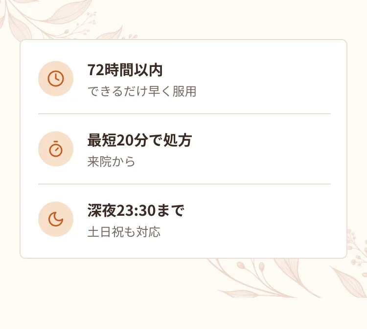
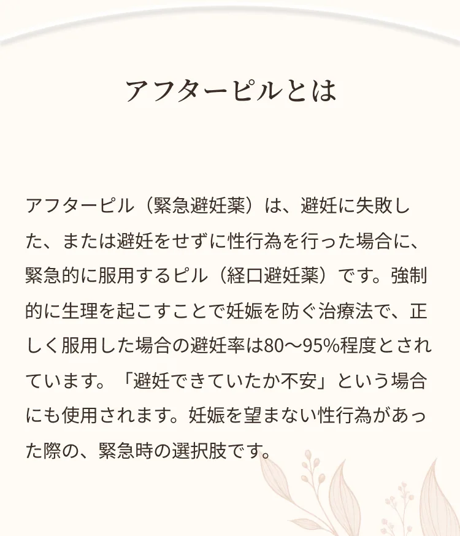
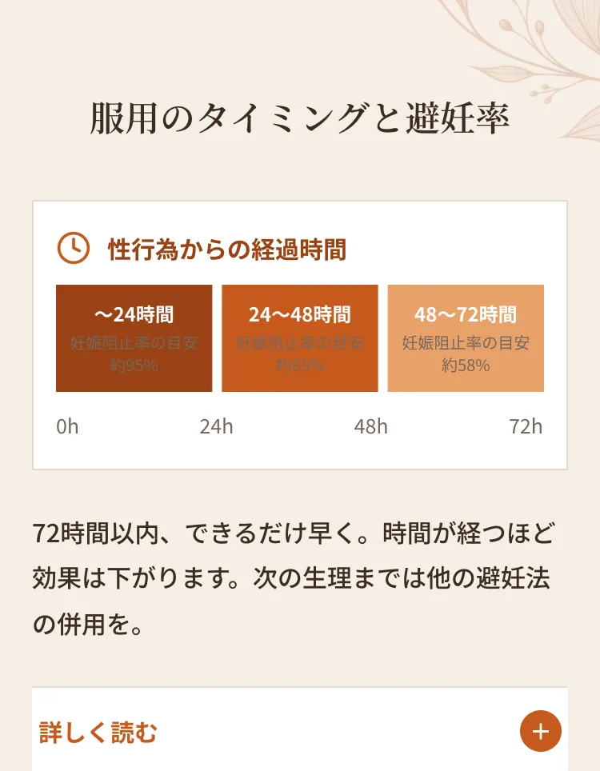
アフターピルは、性行為後できるだけ早く服用することが重要です。当院で取り扱うレボノルゲストレルは、性行為後72時間以内の服用で効果を発揮します。時間の経過とともに避妊効果は下がっていくため、避妊の失敗に気づいたら早めにご来院ください。深夜帯にも対応しているため、「夜中で病院が開いていない」という状況でも受診いただけます。なお、アフターピルは確実に妊娠を防ぐものではないため、次の生理が来るまでは性行為を控えるか、ほかの避妊方法を併用してください。
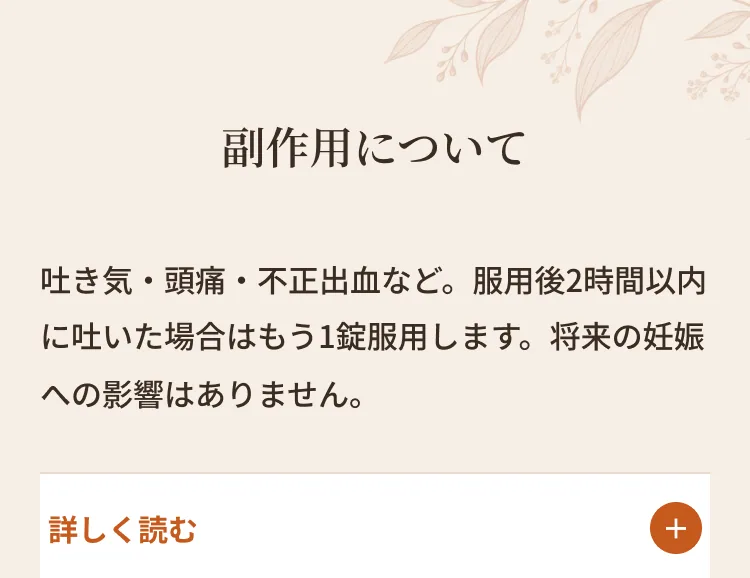
ホルモンバランスが一時的に乱れるため、生理不順や不正出血が起こったり、吐き気・頭痛・倦怠感などが生じたりすることがあります。副作用の頻度は少なく、あっても軽度とされるお薬をお渡ししていますが、吐き気はやや多くみられます。ご希望に応じて吐き気止めの飲み薬も一緒にお渡しできますのでご相談ください。万が一、服用後2時間以内に吐いてしまった場合は、もう1錠服用していただきます。なお、妊娠した場合でもおなかの赤ちゃんに影響はなく、この薬の服用による後遺症や将来の妊娠への影響（妊娠しにくくなる等）もありません。
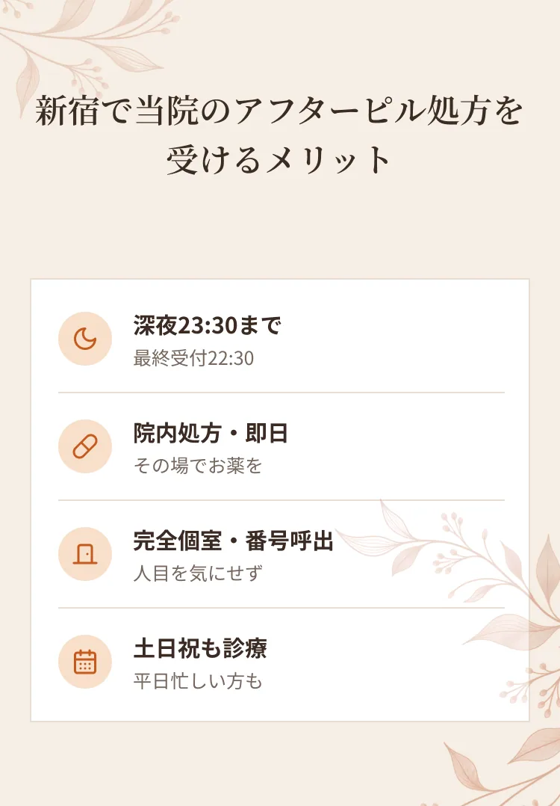
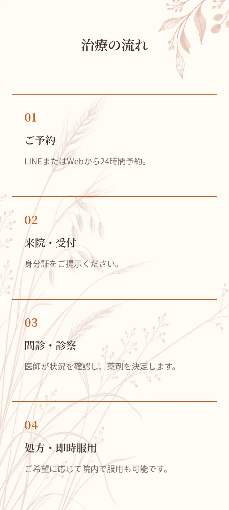
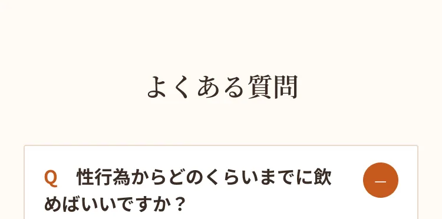
A.72時間以内の服用が推奨されます。早いほど効果が高いため、お早めにご来院ください。
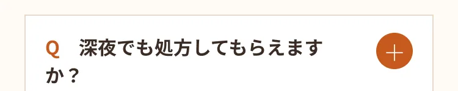
A.深夜23:30まで（最終受付22:30）対応しています。
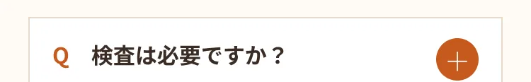
A.問診のうえ処方します。
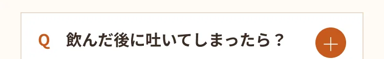
A.服用後2時間以内に吐いた場合は、もう1錠服用していただきます。
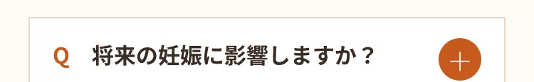
A.後遺症や将来の妊娠への影響はありません。